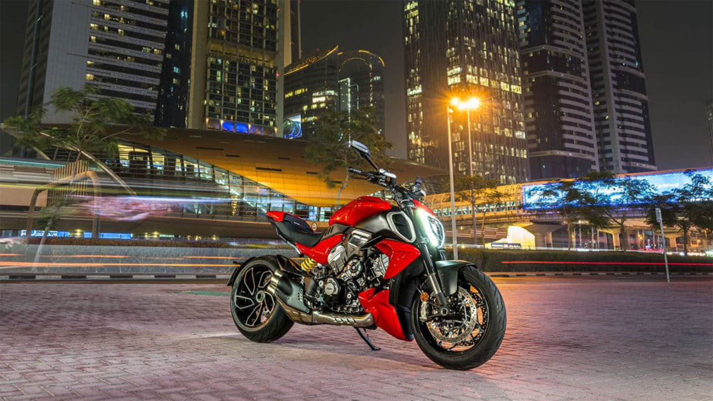
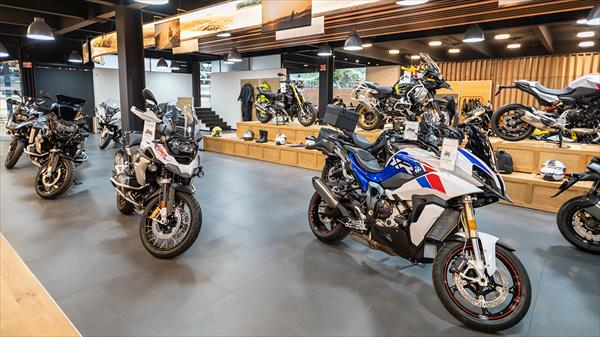
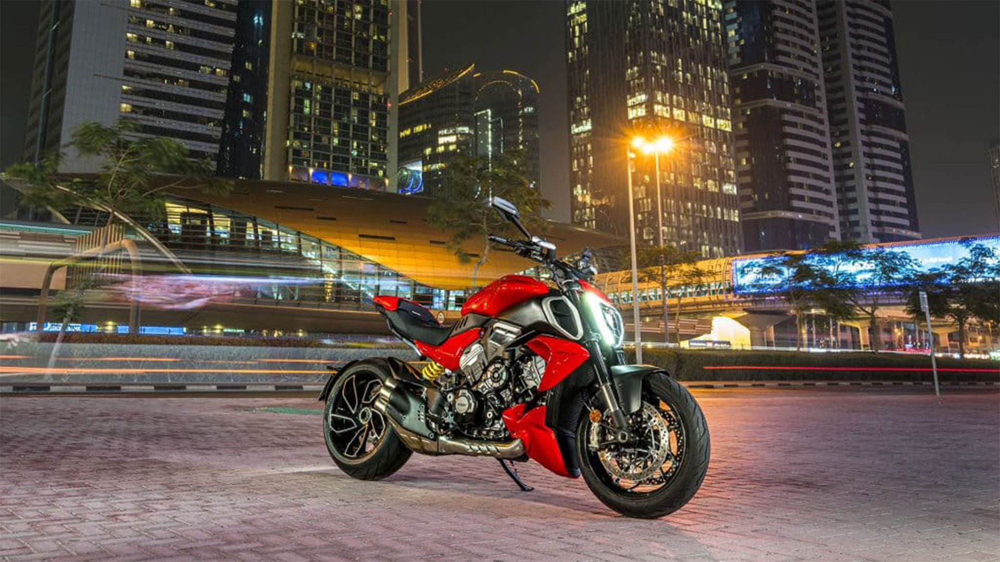
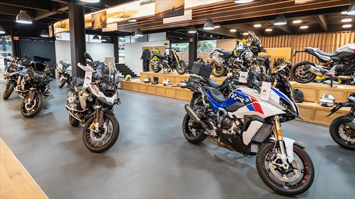

Bienvenido al Universo Motero
La pasión por las motos es un sentimiento que une a millones de personas en todo el mundo. Desde la emoción de la velocidad hasta la libertad de la carretera, las motocicletas ofrecen una experiencia única e incomparable.

Un Breve Recorrido por la Historia de la Moto
La historia de la motocicleta es fascinante, desde sus humildes comienzos como bicicletas motorizadas hasta las sofisticadas máquinas de alto rendimiento que conocemos hoy en día. Inventores visionarios y avances tecnológicos han moldeado este icono de la movilidad.
Algunos hitos importantes incluyen...
- 1885: Karl Benz patenta el primer vehículo motorizado de tres ruedas.
- Finales del siglo XIX: Aparición de las primeras motocicletas con motores de combustión interna.
- Siglo XX: Desarrollo de diferentes estilos y tecnologías, como motores de cuatro tiempos, suspensiones y frenos avanzados.
Explorando los Diferentes Tipos de Motos
El mundo de las motos es diverso y ofrece opciones para cada necesidad y estilo. Aquí te presentamos algunos de los tipos más populares:
Deportivas
Diseñadas para la velocidad y el rendimiento en carretera y circuito.
.jpg)
Cruiser
Ideales para viajes largos y relajados, con un estilo clásico y cómodo.
Adventure
Versátiles para carretera y terrenos sin asfaltar, perfectas para la exploración.
Scooter
Prácticos y ágiles para la movilidad urbana.
Marcas de Motos que Dejan Huella
Existen numerosas marcas que han marcado la historia y el presente del motociclismo. Algunas de las más reconocidas a nivel mundial son:
- Honda
- Yamaha
- Ducati
- BMW Motorrad
- Harley-Davidson
Galería de Imágenes
.jpg) 


